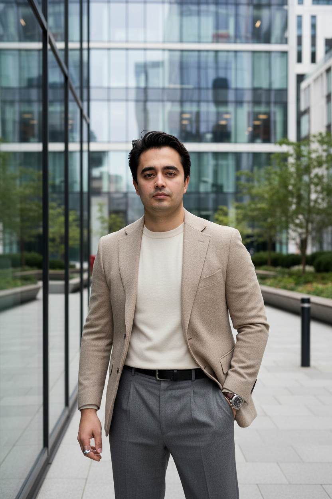

Copilot Studio & AI Agents
Konzeption und Entwicklung von Copilots, Dialog- und Antwortlogik sowie Anbindung interner Wissensquellen und nachgelagerter Prozesse.
Copilot StudioRAGPrompt Engineering
KI-Automatisierung | Power Automate, Copilot Studio & Microsoft Dynamics 365
Ich automatisiere Geschäftsprozesse mit Microsoft Power Platform, Copilot Studio und Power Automate – von der Prozessanalyse bis zum produktiven Betrieb. Erfahrung mit AI Agents, Workflows, API-Integrationen, Customer Care, n8n/Make und SQL. Remote verfügbar.

Technologie soll Arbeit einfacher machen. Dafür müssen Prozess, Daten und Umsetzung zusammenpassen.
Mein Schwerpunkt liegt auf Microsoft Power Platform, Copilot Studio und Power Automate. Ich begleite Vorhaben von der Prozessanalyse und Konzeption bis zur Implementierung und dem produktiven Betrieb.
Dazu gehören AI Agents, KI-gestützte Workflows, API- und Systemintegrationen, Customer-Care-Prozesse sowie Datenlösungen mit Dataverse und SQL. Je nach Aufgabe setze ich auch n8n, Make und UiPath ein.
Pragmatische Beratung und Entwicklung für Automatisierungs- und KI-Vorhaben im Microsoft-Umfeld.
Konzeption und Entwicklung von Copilots, Dialog- und Antwortlogik sowie Anbindung interner Wissensquellen und nachgelagerter Prozesse.
Wiederkehrende Geschäftsabläufe automatisieren, Datenerfassung vereinfachen und Apps mit Workflows und Dataverse verbinden.
Systeme und Daten über REST APIs verbinden, Dynamics-Prozesse technisch erweitern und Abläufe in bestehende Umgebungen integrieren.
Rollen- und Berechtigungskonzepte, strukturierte Bereitstellung, Tests und Qualitätssicherung für Power-Platform- und KI-Lösungen.
Ausgewählte Aufgabenfelder aus meiner Projekterfahrung – mit Fokus auf nachvollziehbare Umsetzung statt erfundener Kennzahlen.
Interne Wissensquellen für einen KI-Assistenten im Customer-Care-Kontext nutzbar machen und eine nachvollziehbare Antwort- und Dialoglogik gestalten.
Bestehende Abläufe analysieren und in strukturierte Workflows mit klarer Prozesslogik und passenden Microsoft-365-Anbindungen überführen.
Geschäftsdaten strukturiert erfassen und Power Apps, Dataverse sowie automatisierte Folgeprozesse miteinander verbinden.
REST-API-Integrationen konzipieren und Datenübergaben in vorhandene Dynamics- und Geschäftsprozessketten einbetten.
Entwicklung, Tests und Bereitstellung von Power-Platform-Lösungen strukturieren und mit Azure DevOps unterstützen.
Power-BI-Lösungen und Reporting-Prozesse weiterentwickeln, damit Geschäftsdaten strukturiert für Analysen bereitstehen.
Die Beispiele sind anonymisiert und beschreiben dokumentierte Aufgabenfelder. Kunden- und Systemdetails sowie nicht belegte Kennzahlen bleiben vertraulich.
Lebenslauf und zwei thematische Portfolios mit anonymisierten Projektbeispielen und Technologieübersichten.
Berufserfahrung, Qualifikationen und technologische Schwerpunkte.
CV herunterladen ↗ PDF · Copilot StudioAnonymisierte Beispiele für Agenten, Wissenslösungen, Integrationen und Qualitätssicherung.
Portfolio herunterladen ↗ PDF · Power AutomateBeispiele für Workflows, Power Apps, Dataverse, APIs, ALM und Reporting.
Portfolio herunterladen ↗Klare Arbeitsschritte schaffen schnelle Orientierung und Lösungen, die fachlich wie technisch in den Betrieb passen.
Ziele, Beteiligte, Daten und bestehende Systeme klären.
Passende Komponenten, Schnittstellen und Rollen festlegen.
Workflows, Apps oder Agenten entwickeln und anbinden.
Qualität prüfen, dokumentieren und iterativ optimieren.
Berufliche Stationen und Qualifikationen nach meinem aktuellen Lebenslauf und FreelancerMap-Profil.
Konzeption und Umsetzung von Power-Platform-Lösungen, Copilot Studio und AI Agents, automatisierten Geschäftsprozessen, Power Apps, Dynamics-365-Anbindungen und REST-API-Integrationen. Dazu kommen KI-gestützte Workflows, Rollen- und Berechtigungskonzepte sowie Tests und Qualitätssicherung.
Entwicklung von Power-Platform-Lösungen und KI-gestützten Automatisierungen mit n8n und Make, Copilot- und Voicebot-Lösungen, SQL-basierter Datenanalyse, Power BI, UiPath sowie ALM und Prozessoptimierung.
Technische Kundenberatung im Omnichannel-Umfeld, C#-Anpassungen, Dynamics-Prozesse, SQL, SSIS/SSRS und UiPath-RPA.
Digitale Kundenidentifikation, Überwachung von Verifikationsabläufen und Qualitätssicherung.
Schwerpunkte aus Power Platform, Microsoft-Ökosystem und ergänzender Automatisierung.
Wenn du Unterstützung bei Copilot Studio, Power Automate oder Dynamics 365 suchst, lass uns über Ziel, Umfang und nächsten Schritt sprechen.